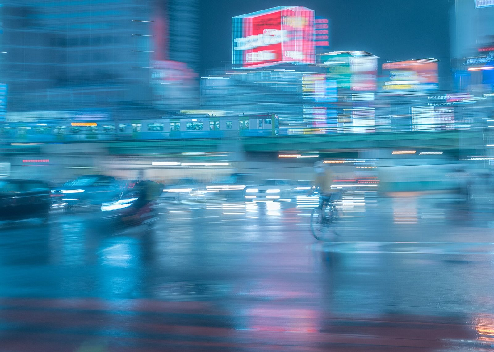

References / Photograph / 535
Shinjuku Ōgādo in the rain at night
A panning long exposure of a Yamanote Line train crossing the Shinjuku Ōgādo railway bridge in the rain: blue-cyan streaks of light under a red illuminated billboard.
- Source
- Wikimedia Commons: 雨の新宿大ガード.jpg
- Creator
- Kznrhsd
- Made
- 25 September 2020
- Style
- Cyberpunk (agent-proposed, not yet reviewed by a person)
- Moods
- Nocturnal, restless, cold
- Evidence
- Downloaded and inspected the Commons rendition at 1920 × 1371 px of the 4426 × 3161 px original. The Japanese description, “雨の新宿大ガードで山手線を流し撮り”, says it is a panning shot of the Yamanote Line at Shinjuku Ōgādo in the rain. The Commons categories include “Rain in Tokyo”, “Neon signs in Tokyo”, and “JR East E235-0”.
- Reviewed
- Rights
- Open license, stored. License: CC0-1.0. Rights policy

Context
Wikipedia’s Cyberpunk article quotes William Gibson: “Modern Japan simply was cyberpunk.” See also Kabukichō in a rainstorm in the same district.
The Ōgādo is the railway bridge that carries the JR lines over Ōme Kaidō at Shinjuku. The Commons category for this view is “Views of Omekaido Overbridge from the Shinjukuogado-W. Intersection at night”. Commons.
Observed
- Almost the whole frame is a cold cyan to steel blue. Only a red illuminated billboard at top center and small orange and pink lights break it.
- A silver-and-green commuter train crosses the bridge in the middle third. It is sharper than everything else because the camera followed it.
- Buildings, cars, a cyclist, and pedestrians are smeared into horizontal streaks.
- Bright horizontal bars of white light repeat across the frame, like scan lines.
- The wet road in the lower half reflects pink and white lights as soft vertical smears.
Why it belongs
The motion blur makes the city look like an unstable display: horizontal streaks and doubled edges, as in the style’s glitch and scan-line effects.
The near-monochrome cyan with one red accent is a working two-color version of the style’s palette.
Borrow
Use one cold cyan field with a single red accent for the most important element.
Suggest motion or interference with horizontal light streaks, in small areas only.
Measured
Machine-extracted by tools/image-traits.py on . Full measurement.
- Mean chroma
- 0.38
- Palette
- #21749d 10%
- #0a5c82 6%
- #438cb1 5%
- #5d9cbe 5%
- #7ea3c5 5%
- #1c678f 4%
- #5789ab 4%
- #437a9d 4%

